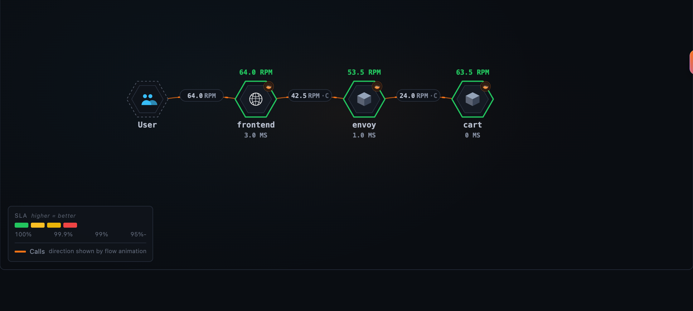
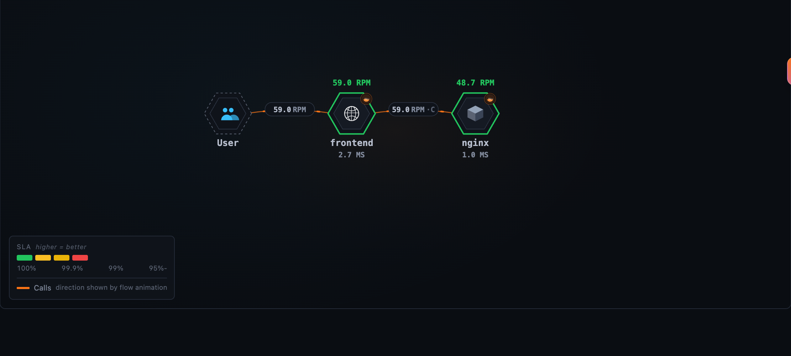
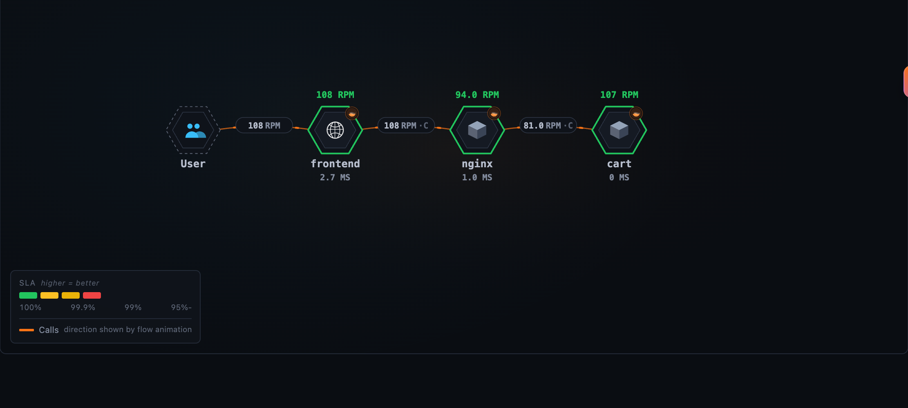
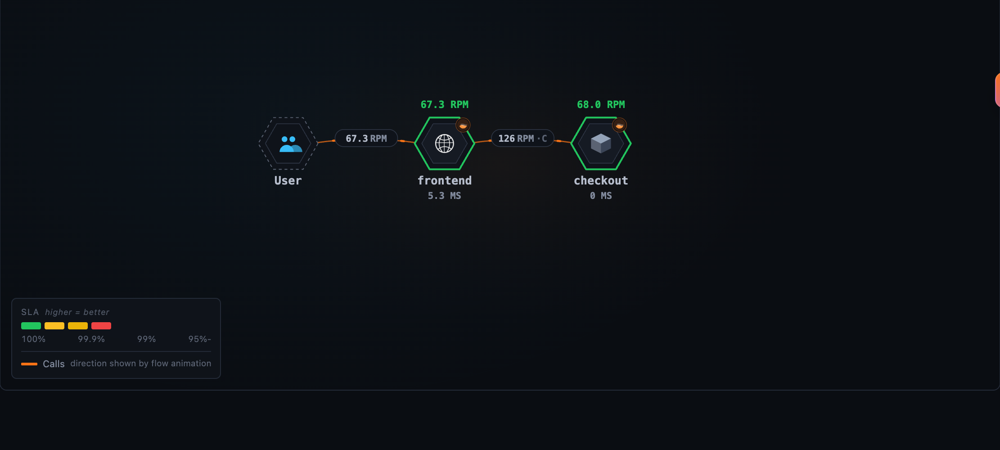
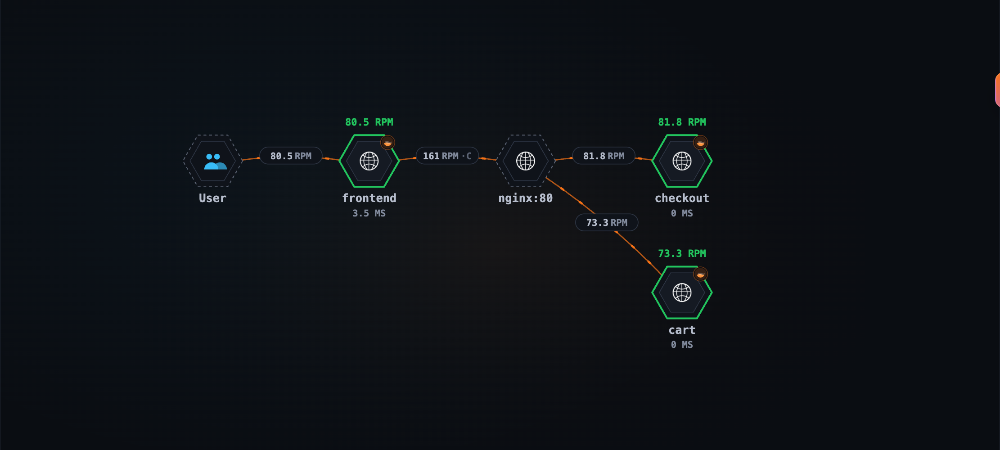
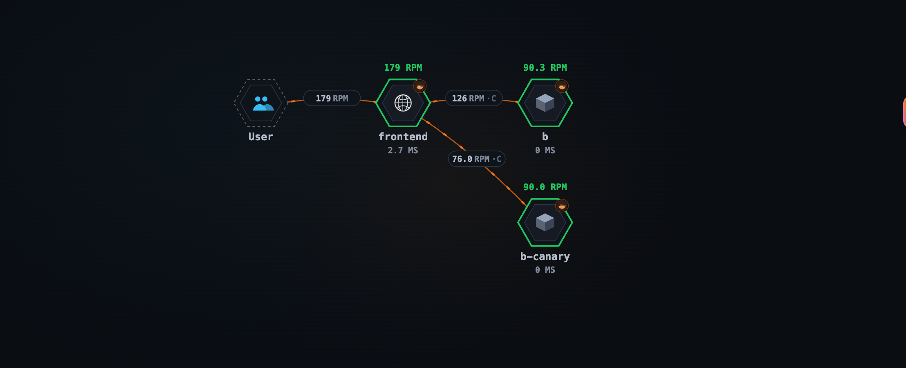
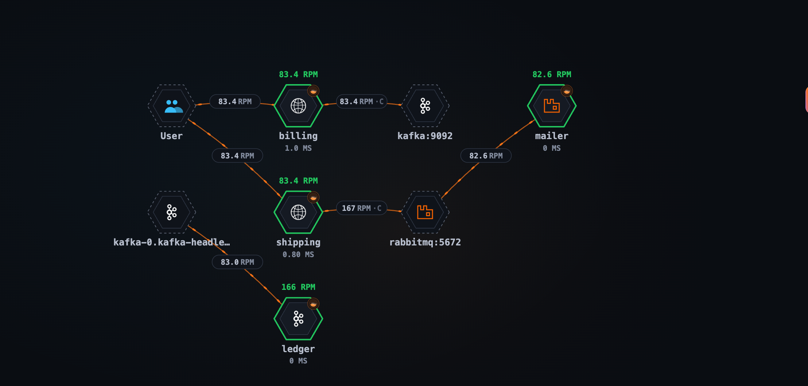
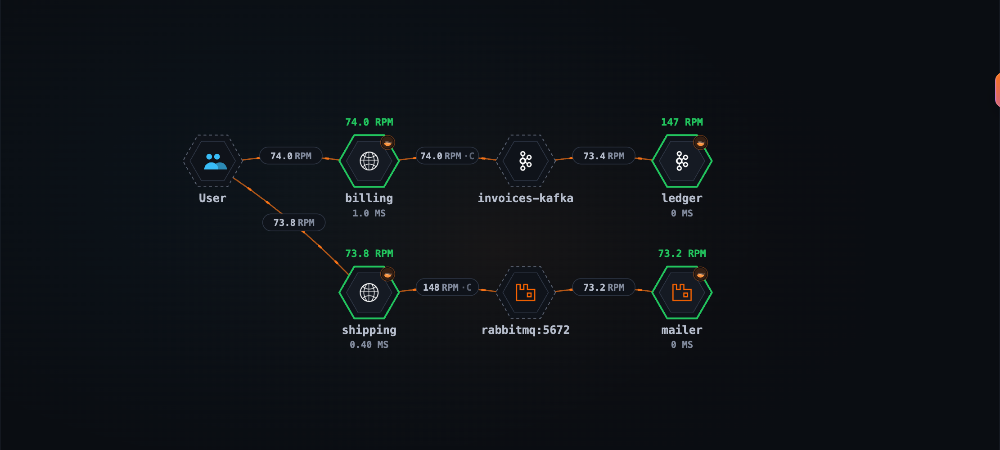
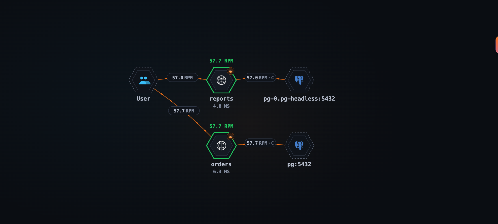
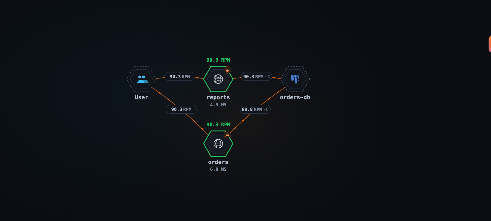

Getting the Topology Right with OpenTelemetry Traces: Gateways, Queues and Databases
The previous post showed SkyWalking turning OTLP traces into service metrics and a topology. In the OpenTelemetry demo the topology came out right with no help, because the demo happens to avoid the hard cases: its proxy, an Envoy, traces itself, and each of its databases and brokers is reached under one name. Real systems have more in between: a gateway that does not trace, a canary behind the stable version’s address, a database or broker reached under two names. This post takes each of those, runs it on a laptop, and shows what the topology looks like before and after the one change that fixes it.
The features in this post are available since SkyWalking 11.1.0.
How SkyWalking names the other end of a call
Everything below follows from one mechanism, so it is worth a minute.
A CLIENT span knows the address it dialed, cart:8080 or 10.0.3.4:8080, but not which service answered. The
callee’s SERVER span knows its own service, and names the caller’s span as its parent. The trace analysis pairs the
two and files what it learned under the caller and the address:
frontend CLIENT dials cart:8080 span F1
└─ cart SERVER parent = F1
learned: frontend->cart:8080 → cart
From then on, frontend’s calls to cart:8080 land on the cart node. One address names one service per caller.
That is the rule each case below bends:
- a gateway sits between the two spans of a pair;
- a canary shares its address with the stable version;
- a message broker answers with no SERVER span at all;
- a database or broker reached under two names is two addresses for one thing.
The mechanism, and how the analysis learns and keeps these pairs, is in Address-named peers.
Run it yourself
Every case below runs in the SkyWalking Showcase as its
otlp-trace-practices feature. You need git, make and Docker with about 6 GB of memory available; the containers
use about 5 GB once running.
git clone https://github.com/apache/skywalking-showcase.git
cd skywalking-showcase
make deploy.docker FEATURE_FLAGS=single-node,otlp-trace-practices
Horizon UI is at http://localhost:8081, login admin / admin, and the services appear in the OTLP Service layer
within a few minutes. To remove everything:
make undeploy.docker FEATURE_FLAGS=single-node,otlp-trace-practices
The feature runs six small cases side by side, each on its own network and under its own service.namespace, so the
OAP names their services <case>::<service>, such as traced-nginx::frontend:
| Case | Topology |
|---|---|
traced-envoy |
frontend → envoy → cart |
traced-nginx |
frontend → nginx → cart |
untraced-nginx |
frontend → [nginx:80] → cart, checkout |
mq |
billing → invoices-kafka → ledger, shipping → rabbitmq:5672 → mailer |
db |
orders, reports → orders-db |
canary |
frontend → b, frontend → b-canary |
The services are instrumented with the OpenTelemetry Python auto-instrumentation (Flask, requests, psycopg2,
confluent-kafka, pika), except the two behind the nginx that does not trace, which are Go services with otelhttp,
for a reason that case explains. They export OTLP/gRPC straight to the OAP with service.layer=OTLP_GENERAL on their
resource, and a curl loop per case sends the traffic. The showcase deploys every case with its fix applied; the
screenshots below were taken one case at a time, before and after the fix, so their services carry no case prefix.
Every config below is the one that ran.
Gateways and proxies
The Gateways and Proxies practice tells which setup fits the gateway in front of your services; each case below links its own page.
A gateway that traces itself: Envoy
frontend ──▶ envoy:10000 ──▶ cart
An Envoy that traces itself reports a SERVER span for the request it receives and, with spawn_upstream_span, a
CLIENT span for its call to the upstream. Each hop then pairs from its own two spans, exactly like a service calling a
service:
# in the typed_config of the envoy.filters.network.http_connection_manager filter
tracing:
spawn_upstream_span: true # a CLIENT span per upstream call; off by default
provider:
name: envoy.tracers.opentelemetry
typed_config:
"@type": type.googleapis.com/envoy.config.trace.v3.OpenTelemetryConfig
grpc_service:
envoy_grpc: { cluster_name: oap } # a cluster pointing at the OAP's gRPC port, 11800
service_name: envoy
resource_detectors:
- name: envoy.tracers.opentelemetry.resource_detectors.environment
typed_config:
"@type": type.googleapis.com/envoy.extensions.tracers.opentelemetry.resource_detectors.v3.EnvironmentResourceDetectorConfig
The environment resource detector reads OTEL_RESOURCE_ATTRIBUTES=service.layer=OTLP_GENERAL from Envoy’s
environment, so its spans are analyzed like the services’. One request then reads:
frontend CLIENT http.url=http://envoy:10000/cart
└─ envoy SERVER (ingress)
└─ envoy CLIENT peer.address=172.19.0.4:8080 (egress, from spawn_upstream_span)
└─ cart SERVER

Three things to keep:
spawn_upstream_span: true. Envoy’s default isfalse, and then Envoy reports one span per request: the hop fromfrontendpairs, the hop tocartdoes not, andcarthangs off nothing. Envoy Gateway turns it on for you.- Don’t list it in
gateways.yml. That file is for gateways that do not trace (below). A listed Envoy would become avirtual gatewaynode instead of its own service. - Give it an instance. SkyWalking names an instance after the resource’s
service.instance.id(orservice.instance). The Python SDK makes one up; Envoy, nginx’s module and the Go SDK do not, and a service without one has its service metrics but no instances. Set it with the rest:OTEL_RESOURCE_ATTRIBUTES=service.layer=OTLP_GENERAL,service.instance.id=envoy-0.
Related docs: Envoy.
In the showcase: envoy.yaml, and the traced-envoy services in docker-compose.otlp-trace-practices.yaml.
nginx with its OpenTelemetry module
frontend ──▶ nginx ──▶ cart (two replicas)
nginx’s OpenTelemetry module reports one SERVER span per request. With otel_trace_context propagate it continues
the caller’s trace and passes its own span on to the upstream, so cart’s SERVER span names nginx’s span as its parent.
The shipped rule learns the hop into nginx from that span, but nothing says where nginx went next, so the hop out of
it is never learned:

Two small changes connect it. On nginx, write the upstream that answered onto the span:
# with load_module modules/ngx_otel_module.so; and otel_exporter { endpoint oap:11800; } as usual
otel_service_name nginx;
otel_resource_attr service.layer OTLP_GENERAL;
otel_resource_attr service.instance.id nginx-0; # the module names no instance of its own
map $upstream_addr $otel_upstream { # only when one server answered, no retry
"~^(?<otel_single_upstream>[^,\s]+)$" $otel_single_upstream;
default "";
}
server {
otel_trace $otel_parent_sampled;
otel_trace_context propagate;
otel_span_attr upstream.address $otel_upstream;
...
}
nginx SERVER parent = frontend's CLIENT span
upstream.address = 172.19.0.4:8080
└─ cart SERVER parent = nginx's span
In the trace analysis, copy the shipped rule file, config/tal/otlp-general.yaml in the OAP
(/skywalking/config/tal/ in its Docker image), to a file of your own in the same folder, say
config/tal/otlp-shop.yaml, or mount it there. Add this block at the end of its SERVER section, the
if (meta.kind == "SERVER") { ... } block, and load it with SW_TRACE_TAL_FILES=otlp-shop, the file name without its
extension, in place of otlp-general, not next to it, or every span counts twice:
// nginx's SERVER span. It also made the call to the upstream.
if (meta.service == "nginx") {
def upstream = attr("upstream.address")
if (upstream) {
prepareNetworkAlias upstream
def upstream = resolveNetworkAlias(callerScopedAddress(meta.service, upstream))
def proxied = serviceRelation(CLIENT, meta.service, meta.layer, upstream, "OTLP_GENERAL", component("http"))
metrics { name "service_relation_client_cpm"; scope proxied; function cpm; value 1 }
metrics { name "service_relation_client_resp_time"; scope proxied; function avg; value meta.latency }
metrics { name "service_relation_client_call_sla"; scope proxied; function percent
match ok }
}
}
prepareNetworkAlias is what a CLIENT span normally does: it tells the pairing “I dialed this address”. Here nginx’s
SERVER span does it on nginx’s behalf, and cart’s span, whose parent it is, completes the pair:

upstream.address is a name we chose, not a semantic convention; whatever you pick, use the same one in nginx and in
the rule. meta.service is the name the OAP gives the service, so with services grouped by service.namespace it is
the grouped name: the showcase’s rule compares traced-nginx::nginx.
The map leaves a retried request’s upstream empty, because a retry lists every server it tried and the pair
could not tell which one answered.
Related docs: nginx with the OpenTelemetry module.
In the showcase: nginx-traced.conf, the rule file otlp-trace-practices.yaml, and the traced-nginx services
in docker-compose.otlp-trace-practices.yaml.
A gateway that does not trace
frontend ──▶ nginx ──▶ /cart → cart
└──▶ /checkout → checkout
An ingress, a cloud load balancer or an nginx without tracing emits no spans. frontend dials nginx, and the next
span is cart’s or checkout’s, naming frontend’s span as its parent. So the pair learns frontend->nginx:80 → cart,
and a moment later frontend->nginx:80 → checkout, each overwriting the other. In the lab, the gateway is gone and
every call lands on whichever service answered last:

List the gateway in config/gateways.yml, as the callers name it, and keep the callers’ Host on the way through:
gateways:
- name: shop-gateway
instances:
- host: nginx # as frontend's spans name it: http://nginx/...
port: 80
location /cart { proxy_set_header Host $host; proxy_pass http://cart:8080; }
location /checkout { proxy_set_header Host $host; proxy_pass http://checkout:8080; }
A listed address is never paired. frontend’s calls end on a virtual gateway node, and each service behind it draws
its own edge from the gateway, read from the Host it received:

The second half, the gateway’s edge to each service, depends on the address the service’s SERVER span says it was dialed at, and here the SDKs differ:
Go otelhttp cart SERVER server.address=nginx → nginx:80, the listed gateway
Python Flask (WSGI) cart SERVER server.address=nginx server.port=8080 → nginx:8080, not listed
A Host without a port, as nginx’s $host passes it, is read as port 80, the port gateways.yml assumes. Go’s
otelhttp takes the host and the port from the Host header and leaves the port out when the header has none. The
Python WSGI instrumentation (0.66b2) takes the host from the Host header but the port from the port the application
itself listens on, with the old and the stable HTTP conventions alike, so a Flask service behind this gateway reports
nginx:8080 and draws no edge from it; only frontend → [nginx:80] remains. That is why cart and checkout are Go
services in this case. Before relying on the gateway’s edges, look at what your services’ SERVER spans report.
Related docs: Gateways Without Instrumentation.
In the showcase: nginx-untraced.conf, gateways.yml, and the untraced-nginx services in
docker-compose.otlp-trace-practices.yaml.
Canary releases
frontend ──▶ b:8080 (a router that emits no spans)
├─ x-canary: v2 → b-canary
└─ otherwise → b
A canary is a second version behind the same address. Here a router that does not trace sends requests carrying
x-canary: v2 to b-canary and the rest to b, the way Istio routes on a header with the sidecars’ tracing off.
frontend dials b:8080 either way, so both kinds of call pair under one row, frontend->b:8080, which names b
one moment and b-canary the next. Every call lands on the service the address was last paired with. In the lab,
over one minute:
frontend → b edge |
frontend → b-canary edge |
b served |
b-canary served |
|
|---|---|---|---|---|
| shipped rule | 230 | none | 115 | 115 |
| with the rule below | 115 | 115 | 115 | 115 |

Only the caller’s span can tell the two kinds of call apart, so put the version into the address it dialed. In your
copy of the rule file, after the peer is named and after the line that adds :80 to a gateway dialed without a port,
and before prepareNetworkAlias:
if (peer && !isGateway(peer)
&& attr("http.request.header.x-canary", "http.request.header.x_canary") == "v2") {
def peer = peer + "(v2)"
}
The canary’s calls are then frontend->b:8080(v2) → b-canary, the others frontend->b:8080 → b, and each edge counts
its own calls:
Three details the lab turned up:
- The header has to be on the CLIENT span, which the SDKs record only when asked. For the Python
requestsinstrumentation:OTEL_INSTRUMENTATION_HTTP_CAPTURE_HEADERS_CLIENT_REQUEST=x-canary. - Python spells it differently. The semantic conventions keep the header’s dashes,
http.request.header.x-canary; the Python instrumentation turns them into underscores,http.request.header.x_canary. The rule reads both. - The value is a list,
["v2"]; the OAP joins a list with,, so a single header reads asv2.
!isGateway(peer) leaves a call to a listed gateway as it is, since nginx:80(v2) would no longer match
gateways.yml. Match only the values you route on: appending any value as it comes makes a new row per value.
Two other shapes, not run here:
- A traced gateway that dials each version at its own address needs nothing.
gateway->10.0.1.5:8080 → bandgateway->10.0.2.7:8080 → b-canaryare two rows, whether the split is by header, weight or blue/green. Prefer this one where you can. - A traced gateway that dials both versions at one address, a router behind it splitting them, needs the same rule
on the gateway’s own CLIENT spans, with
meta.service == "<gateway>"in place of!isGateway(peer), and the gateway recording the header on its CLIENT span.
A split by weight leaves nothing on the caller’s span to tell the versions apart: trace the gateway so it dials each
version at its own address, or report the canary under the same service.name with its own service.instance.id, so
its calls count as b’s and its instances tell the versions apart.
Related docs: Canary Releases.
In the showcase: nginx-canary.conf, the rule file
otlp-trace-practices.yaml, and the canary services in
docker-compose.otlp-trace-practices.yaml.
Message queues
A producer and a consumer are both clients of the broker. There is no SERVER span to pair, so the broker is named
from each span’s own attributes, and the two edges, producer → broker and broker → consumer, meet only where both
sides spell the broker the same way.
The lab runs a Kafka broker reached at two addresses, its Service kafka:9092 and its own name
kafka-0.kafka-headless:9092, and a RabbitMQ:
| Service | Client | Connects with |
|---|---|---|
billing (producer) |
confluent-kafka | bootstrap.servers=kafka:9092,kafka-0.kafka-headless:9092 |
ledger (consumer) |
confluent-kafka | bootstrap.servers=kafka-0.kafka-headless:9092,kafka:9092 |
shipping (producer) |
pika | ConnectionParameters(host="rabbitmq", port=5672) |
mailer (consumer) |
pika | the same |
confluent-kafka names the broker by the first bootstrap.servers entry, on both sides; pika by the host and port
it was given:
billing PRODUCER messaging.system=kafka server.address=kafka server.port=9092
ledger CONSUMER messaging.system=kafka server.address=kafka-0.kafka-headless server.port=9092
shipping PRODUCER messaging.system=rabbitmq net.peer.name=rabbitmq net.peer.port=5672
mailer CONSUMER messaging.system=rabbitmq net.peer.name=rabbitmq net.peer.port=5672
RabbitMQ meets on one node. Kafka is one broker drawn as two, and the two halves of each message never meet:

Either list the same bootstrap entry first in every client, or name the broker in config/server-clusters.yml, every
spelling the clients report:
clusters:
- name: invoices-kafka
members:
- kafka-0.kafka-headless:9092 # the broker's own name
aliases:
- kafka:9092 # its Service

What to expect from other clients, from the message queue practices:
- No address at all. The OpenTelemetry Java and .NET agents, kafkajs, kafka-python and the Go auto-instrumentation
(for
segmentio/kafka-go) report no Kafka broker address, so every Kafka cluster they reach is one node namedkafka; nothing inserver-clusters.ymlcan split it. The Java agent’s RabbitMQ spans land onrabbitmqthe same way. - One side only. The RabbitMQ .NET client names its endpoint when it publishes, but its
deliverspan names none, so its consumer side stays onrabbitmq. - No direct edge. The topology draws
producer → broker → consumer, neverproducer → consumer. Which consumer read which producer’s messages shows in a trace only when the consumer continues the producer’s trace, as pika’s does here; confluent-kafka’s consumer starts a trace of its own.
One more thing the lab shows: a client that reports a message twice is counted twice. The pika instrumentation
(0.66b2) reports each publish as two nested PRODUCER spans, so shipping → rabbitmq shows twice the messages sent.
confluent-kafka’s consumer reports a recv CONSUMER span with the process span under it; only process names the
broker, so the edge from the broker is right, but both count as requests of ledger, which shows twice its rate.
Related docs: Message Queue, with what each client reports.
In the showcase: server-clusters.yml, and the mq services, Kafka and RabbitMQ in
docker-compose.otlp-trace-practices.yaml.
Databases and caches
A database answers with no SERVER span either, so it is named after the address the client reports. Two services reaching one PostgreSQL by two names:
| Service | Connects to | Its span reports |
|---|---|---|
orders |
pg:5432 (the Service) |
net.peer.name=pg, net.peer.port=5432 |
reports |
pg-0.pg-headless:5432 (the server’s own name) |
net.peer.name=pg-0.pg-headless, net.peer.port=5432 |

The same file names them as one:
clusters:
- name: orders-db
members:
- pg-0.pg-headless:5432 # the server's own name
aliases:
- pg:5432 # its Service

members are single nodes, aliases names for the whole cluster; both are renamed. Addresses are compared as
strings: nothing is resolved and no default port is assumed, so copy into the file exactly what the spans report,
every spelling of it. Look at the address-named nodes in the topology, or search the spans in TraceQL.
Two systems behind one address. The rename goes by address alone, so if a load balancer data-lb.internal fronts
both PostgreSQL and Redis, and both clients report the bare host, as clients that leave out a default port do, the
Redis calls are renamed to orders-db too. Give the cluster the system as a kind, and pass the span’s system in your
copy of the rule file:
clusters:
- name: orders-db
kinds: [postgresql] # as the clients report db.system.name / db.system
aliases: [data-lb.internal]
def cluster = findServerClusterName(peer, attr("db.system.name", "db.system", "messaging.system.name", "messaging.system"))
The database and cache practices list the three calls to change together.
Related docs: Database and Cache, with what each client reports.
In the showcase: server-clusters.yml, and the db services and PostgreSQL in docker-compose.otlp-trace-practices.yaml.
Checklist
| In front of the callee | Do | Topology |
|---|---|---|
| A gateway that traces itself (Envoy) | spawn_upstream_span: true, service.layer=OTLP_GENERAL on its spans |
caller → envoy → service |
| A proxy with one span per request (nginx module) | upstream.address on its span, one block in your rule file |
caller → nginx → service |
| A gateway that does not trace | list it in gateways.yml, keep the Host |
caller → [gateway] → service |
| A canary a traced gateway dials at its own address | nothing | gateway → b, gateway → b-canary |
| A canary behind one address | a header rule on the CLIENT spans | caller → b, caller → b-canary |
| A broker or database reached under several names | server-clusters.yml, every spelling the spans report |
one node |
| Two systems behind one address | kinds on the cluster, the system passed in your rule file |
one node per system |
Learn more
- Gateways and Proxies, with the pages for Envoy, nginx, gateways without instrumentation and canary releases
- Message Queue and Database and Cache practices, with what each agent reports
- Server clusters and uninstrumented gateways
- Trace Analysis Language, for the rule functions used above